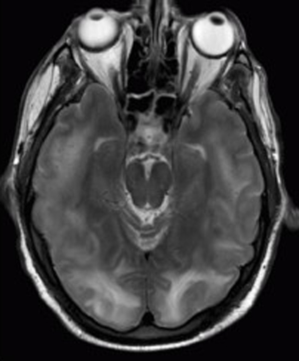

Ficha del catálogo
Síndrome de encefalopatía posterior reversible
- Sistema
- Nervioso
- Modalidad
- RM
- Región
- Sustancia blanca subcortical parietal y occipital
- Dificultad
- Avanzado
Este síndrome consiste en edema vasogénico de predominio posterior por fallo de la autorregulación cerebral y disfunción endotelial. Se asocia a crisis hipertensivas, preeclampsia y eclampsia, fármacos inmunosupresores y citotóxicos, insuficiencia renal y sepsis, y cursa con cefalea, crisis convulsivas, alteración visual y confusión.
Técnica
Resonancia magnética con FLAIR, T2, difusión con mapa de coeficiente aparente y secuencia sensible a susceptibilidad. El mapa cuantitativo de difusión es esencial para demostrar el carácter vasogénico del edema.
Qué observar
- Hiperintensidad en FLAIR de la sustancia blanca subcortical parietooccipital
- Distribución bastante simétrica en ambos hemisferios
- Coeficiente aparente de difusión elevado, propio del edema vasogénico
- Afectación de territorios frontera y de la unión entre territorios vasculares
- Variantes con compromiso de tronco, cerebelo o ganglios basales
- Focos hemorrágicos o realce leptomeníngeo en los casos más graves
Hallazgos
Áreas de hiperintensidad en FLAIR y T2 en la sustancia blanca subcortical y en la corteza adyacente de las regiones parietales y occipitales, con distribución bastante simétrica y sin respetar un único territorio arterial. El coeficiente aparente de difusión suele estar aumentado, lo que confirma edema vasogénico y no isquemia. En un porcentaje de casos existen focos de restricción, hemorragia o realce, hallazgos que se asocian a peor evolución. La reversibilidad en el control tras corregir la causa apoya el diagnóstico.
Perlas
La clave está en medir el coeficiente aparente de difusión, ya que un valor elevado indica edema vasogénico reversible y un valor bajo advierte de infarto establecido con menor probabilidad de recuperación. La denominación puede inducir a error, porque existen formas con predominio frontal, del tronco o de los ganglios basales que no dejan de corresponder a la misma entidad.
Diagnóstico diferencial
- Infarto de la circulación posterior
- Respeta un territorio arterial, es unilateral con mayor frecuencia y muestra restricción a la difusión con coeficiente bajo.
- Trombosis venosa cerebral
- Presenta defecto de repleción en la venografía y el edema se distribuye según el drenaje venoso comprometido.
- Encefalitis
- Afectación cortical con predominio temporal e insular, fiebre y alteración del líquido cefalorraquídeo.
- Estado epiléptico prolongado
- Los cambios se limitan al territorio de la actividad crítica, con hiperperfusión y correlato electroencefalográfico.
Simuladores
- Hiperintensidades crónicas de sustancia blanca por enfermedad de pequeño vaso
- Artefacto de flujo del líquido cefalorraquídeo en FLAIR
- Leucoencefalopatía tóxica de otras causas
Por modalidad
- TC
- Puede mostrar hipodensidad occipital bilateral, pero tiene baja sensibilidad y no permite distinguir el tipo de edema.
- RM
- Es la técnica de elección porque define la distribución y demuestra el carácter vasogénico del edema.
Protocolo
FLAIR, T2, difusión con mapa cuantitativo y susceptibilidad; se recomienda añadir venografía cuando el patrón no sea típico y programar un control a las semanas para documentar la reversibilidad.
Clasificación
Errores frecuentes
- Diagnosticar infarto por no revisar el mapa de coeficiente aparente
- Descartar la entidad porque el edema no es de predominio occipital
- No informar los focos hemorrágicos o de restricción, que modifican el pronóstico

encefalopatía posterior reversible edema vasogénico crisis hipertensiva eclampsia coeficiente de difusión reversibilidad